Christoph Huber
Level Up Research: Replication in Action
28 April 2025
Recognize common questionable research practices
Understand the role of pre-registration and reproducibility in improving scientific credibility
Learn how to pre-register studies and write pre-analysis plans
Navigate the current publishing norms w.r.t pre-registration and reproducibility
Preregistration means writing down your study plan — including hypotheses, methods, and analyses — before you collect or look at the data.
Key Idea:
You commit in advance to what you plan to test and how you will test it.
pre- … You commit in advance … \(\rightarrow\) before data collection
-registration … You commit … \(\rightarrow\) plan is registered on a public repository
Prevents flexible decisions that bias results (“p-hacking”).
Makes it clear what was planned vs. what was discovered later.
Preregistration means writing down your study plan — including hypotheses, methods, and analyses — before you collect or look at the data.
Path for a preregistered study:
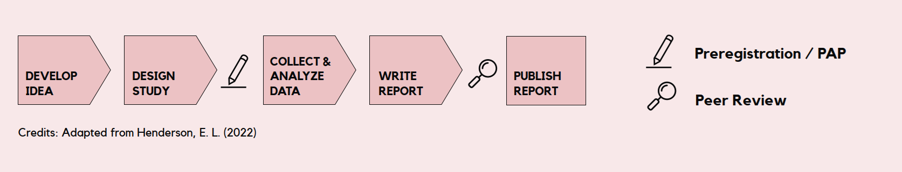
Simmons et al. (2021): A scientist’s job consists of two parts:
discover true facts about the world
interpret those facts
You cannot competently do the second part without doing the first part. You cannot generate correct theories on a foundation of incorrect facts.
\(\rightarrow\) Scientific results need to be replicable, such that policies/actions can be based upon them (Ioannidis, 2005; Ioannidis et al., 2013).
Replication Crisis
Open Science Collaboration (2015)
Camerer et al. (2016)
Camerer et al. (2018)
Davis et al. (2023)
Simmons et al. (2021): A scientist’s job consists of two parts:
discover true facts about the world
interpret those facts
\(\rightarrow\) unfortunately, many of the facts in the social sciences are wrong!
But why?
Many published findings “… are false precisely because it is easy for moral, competent researchers to generate false findings. …
Simmons et al. (2021): A scientist’s job consists of two parts:
discover true facts about the world
interpret those facts
\(\rightarrow\) unfortunately, many of the facts in the social sciences are wrong!
But why?
Many published findings “… are false precisely because it is easy for moral, competent researchers to generate false findings. … The bulk of the problem is not caused by immorality or incompetence. It is caused by the selective reporting of analyses that generate desirable results.” (p. 153)
\(\rightarrow\) more generally: questionable research practices
research practices that are increase the risk of false-positive results, often without clear disclosure
not misconduct, but more of a gray area
Examples:
p-hacking: Trying many analyses and reporting only the significant ones.
HARKing (Hypothesizing After the Results are Known): Presenting a post hoc explanation as if it were planned all along.
Selective Reporting: Only reporting outcomes that “worked” and ignoring others.
Flexible Data Exclusions: Dropping participants or data points without a pre-specified rule.
Outcome Switching: Changing the primary outcome based on what looks best.
Questionable Research Practices can arise when there are Researcher Degrees of Freedom
\(\rightarrow\) to test a hypothesis, a researcher often has to make many analytic decisions
For example:
which measures to analyze (and how to code and combine them)
which controls to use (and how to code and combine them)
which observations to exclude
which moderators to test
which subgroups to analyze
…
Null Hypothesis Significance Testing: in social sciences, we often use \(p<0.05\) to determine whether a result is significant, i.e., whether we reject the null hypothesis
\(\rightarrow\) we usually accept a false-positive rate of 5%
However, this hinges on an important assumption!
Assumption: Researchers will run exactly one analysis on their data!
(or correct for how many analyses they are willing to run)
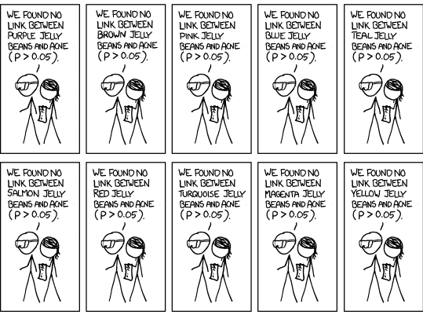
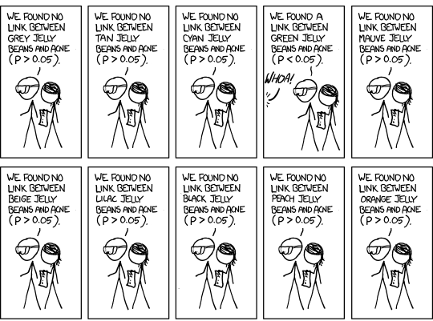
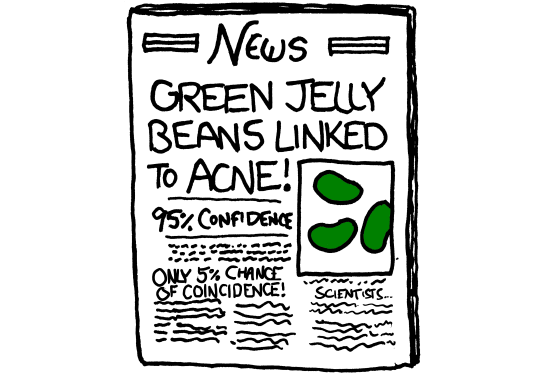
Null Hypothesis Significance Testing
Standard approach: correct for multiple hypothesis tests, i.e., for how many analyses you are willing to run (e.g., Bonferroni)
Null Hypothesis Significance Testing
If you run enough analyses, some will look ‘significant’ even if there’s no real effect.
If you run enough analyses, some will look ‘significant’ even if there’s no real effect.
Problem with p-hacking: you do not know how many analyses the researcher actually ran!
\(\rightarrow\) researchers are necessarily increasing the false-positive rate they accept to a level above 5%!
If you run enough analyses, some will look ‘significant’ even if there’s no real effect.
Problem with p-hacking: you do not know how many analyses the researcher actually ran!
\(\rightarrow\) researchers are necessarily increasing the false-positive rate they accept to a level above 5%!
P-hacking can make it easy to repeatedly find statistically significant support for any hypothesis
Without pre-registration, p-hacking is not just easy to do, but actually hard to avoid!
To not p-hack, researchers have to
perfectly plan out, in advance, all of the key details of their critical analysis,
conduct that analysis, and
remember to report that analysis, rather than a different analysis, as the one that “counts” (with other analyses being reported as “exploratory” or “tentative”).
Researchers must decide exactly how they will conduct their key analysis before they collect their data.
And then they must commit to it.
Without pre-registration, p-hacking is not just easy to do, but actually hard to avoid!
To not p-hack, researchers have to
perfectly plan out, in advance, all of the key details of their critical analysis,
conduct that analysis, and
remember to report that analysis, rather than a different analysis, as the one that “counts” (with other analyses being reported as “exploratory” or “tentative”).
Researchers must decide exactly how they will conduct their key analysis before they collect their data.
And then they must commit to it. \(\rightarrow\) PRE-REGISTRATION
Preregistration is well-suited to be applied for experimental studies, surveys, etc.
But what about studies using observational (secondary) data?
None of what I said so far only applies to experimental research
\(\rightarrow\) Almost any type of empirical study can benefit from a preregistration, especially if the authors did not have access to the final dataset before the study began!
Preregistration is a time-stamped, read-only plan:
Registered Report: extended plan that undergoes formal peer review ahead of the research
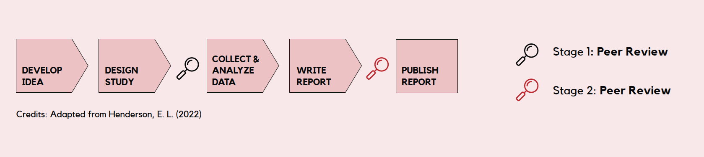
Goal of preregistration: distinguish between what was planned (confirmatory, hypothesis-testing) vs. what was discovered later (exploratory, hypothesis, generating)
\(\rightarrow\) requirements very small: can be minimal, just needs to time-stamp your basic plan
More generally: we want to prevent flexible decisions that can bias results (“p-hacking”)
\(\rightarrow\) specify exactly how the analysis will be conducted, step-by-step \(\rightarrow\) Pre-analysis Plan (PAP)
Recent evidence from 15 leading economics journals:
pre-registration in itself does not reduce p-hacking and publication bias
pre-registration including PAP \(\rightarrow\) reduced p-hacking and publication bias
Goal of preregistration: distinguish between what was planned (confirmatory, hypothesis-testing) vs. what was discovered later (exploratory, hypothesis, generating)
\(\rightarrow\) requirements very small: can be minimal, just needs to time-stamp your basic plan
More generally: we want to prevent flexible decisions that can bias results (“p-hacking”)
\(\rightarrow\) specify exactly how the analysis will be conducted, step-by-step \(\rightarrow\) Pre-analysis Plan (PAP)
In economics: ~50% of pre-registration have no PAP!
In this lecture (= what I believe you should do): pre-registrations with PAP
You can preregister your study on a public repository for preregistrations; for example:
AsPredicted.org https://aspredicted.org
AEA RCT Registry https://www.socialscienceregistry.org/
Open Science Framework (OSF, https://osf.io)
Templates differ greatly in level of detail required!
Center for Open Science / OSF: https://www.cos.io/initiatives/prereg
Registration Forms and Templates: https://osf.io/zab38/wiki/home/
Example preregistrations: https://osf.io/e6auq/wiki/Example%20Preregistrations/
Lab2 Materials: https://labsquare.net/materials/educational
The structure of your preregistration and the specific headings will differ depending on the template. However, at least the following basic elements are (or should be!) part of every preregistration:
Research Questions & Hypotheses
Study design: survey design / experimental design
Precise measures of all relevant variables
Treatments and assignment mechanism
Sample size you intend to collect
Detailed pre-analysis plan
Example:
“We explore various relationships between management practices and employee outcomes.”
Why is this a bad example?
vague
not falsifiable
“exploring” does not commit to any test
\(\rightarrow\) better: “Offering flexible working hours increases self-reported employee productivity.”
Example:
“We measure various aspects of employee performance.”
Why is this a bad example?
no clear primary outcome
“various aspects” allows to cherry-pick which aspect to focus on (i.e., which one’s results you like the most)
\(\rightarrow\) better:
“Primary outcome: average self-reported productivity, measured weekly on a 5-point Likert scale.”
Example:
“We aim to get as many participants as possible.”
Why bad?
no target or limit
no justification
allows you to look at the data and choose when to stop data collection (potentially depending on the results)
\(\rightarrow\) better:
“We plan to recruit 300 participants to achieve 80% power for detecting an effect d = 0.3 at \(\alpha=0.05\).”
Example:
“We will analyse our hypotheses using OLS regressions.”
Another example: “We will use OLS regression of productivity on treatment, controlling for baseline productivity.”
\(\rightarrow\) better: “We will estimate the following regression model using OLS, with clustered standard errors at the firm level: \(P_i = \beta_0 + \beta_1 T_i + \beta_2 \text{Prod}_i + \varepsilon_i\)”
What is maybe still missing?
How to deal with outliers? How to deal with missing values? Are variables transformed? Etc.
The best way to pre-register an analysis plan – although I’ve almost never seen this (yet) – is … ?
… to already pre-register the analysis code!
\(\rightarrow\) We can think of a pre-registration as front-loading part of the work for what you will do in preparing your replication package
Take a few minutes to think about a research project you are currently working on — or an idea you’ve been considering (can also be hypothetical). Write down:
Main Hypothesis
Primary Outcome
Basic Analysis Plan
Don’t overthink — just draft!
Focus on being clear, not complete
…
To enhance transparency and limit researcher degrees of freedom, the following elements should be included in your PAP:
Research Questions & Hypotheses
Sample
Sequencing of Analyses
Design Details
Data Sources & Variables
To enhance transparency and limit researcher degrees of freedom, the following elements should be included in your PAP:
Statistical Approach - Outcomes
Pilot and existing data
Ethics
Statistical Methods
PAPs especially effective if they are specific, precise, and exhaustive (Bakker, Marjan, et al., 2020) \(\rightarrow\) researchers can reduce unintended flexibility, supporting the credibility of their findings
Example: “We will use the general risk question (Dohmen et al., 2011) to measure risk preferences.” \(\rightarrow\) specific, but not precise and exhaustive
Example: “We will use the general risk question (Dohmen et al., 2011), which asks respondents to state their willingness to take risks on an 11-point Likert scale, to measure risk preferences.”
\(\rightarrow\) specific and precise, but not exhaustive
PAPs especially effective if they are specific, precise, and exhaustive (Bakker, Marjan, et al., 2020) \(\rightarrow\) researchers can reduce unintended flexibility, supporting the credibility of their findings
Example: “We will use the general risk question (Dohmen et al., 2011), which asks respondents to state their willingness to take risks on an 11-point Likert scale, and treat the chosen value as the continuous measure of risk preferences (i.e., the response ranges from 0 to 10, with higher values indicating higher risk tolerance).” \(\rightarrow\) specific, precise, and exhaustive \(\checkmark\)
What should I do if unforeseen issues occur before, during, or after data collection?
Yes, but …
Any deviations from the original plan must be reported in the paper!
\(\rightarrow\) Transparent Changes Template: https://osf.io/yrvcg
\(\rightarrow\) Example: Haushofer & Shapiro (2016 QJE): https://doi.org/10.1093/qje/qjw025
\(\rightarrow\) Pre-registering of pilot or ex-ante manipulation check? Sure: Huber et al. (2024) https://osf.io/8wka2
Can I still run exploratory analyses or robustness checks?
Yes, but …
pre-registered hypotheses have to remain intact
any unregistered tests have to be explicitly reported as such
\(\rightarrow\) Example: Huber et al. (2023): preregistered vs. not preregistered results
\(\rightarrow\) Another solution: add something like “This analysis is not preregistered.”
Well, it depends …
Journal policies differ a lot (both between and within fields)
TOP Factor can be a useful metric (and look-up tool), however, it is not updated anymore
Factor descriptions: https://topfactor.org/summary
Journal finder: https://topfactor.org/journals
From a purely scientific standpoint: YES! (of course)
From a journal standpoint: Well …
On paper, no economics / finance / management journal requires pre-registration
BUT: rejection (at least partly) based on the lack of a pre-registration is common for experimental/survey studies (at least in top journals)
I expect policies to adapt \(\rightarrow\) pre-registrations and PAPs will be required in the future, so why not start doing it now?
From a selfish standpoint: also YES (see Wagenmakers and Dutilh, 2016)
”Authors of accepted papers … must provide … the data, programs, and other details … sufficient to permit replication.”
Code and Data Editor (CDE) Code & Data Associate Editors (CDAEs)
Requirements essentially the same as for top journals in economics
Before introduction of policy: 95% of papers could not be reproduced!
Since introduction: 68% of papers could be reproduced
main reason for non-reproducibility: data is not shared
nevertheless: large differences between fields
YES, YES, YES!
From a purely scientific standpoint: YES (\(\rightarrow\) reproducibility!)
From a journal standpoint: YES
20 of the 24 journals used for the UT Dallas Business School rankings have a code/data disclosure policy; in 10 of them, code/data sharing is compulsory
23 out of top 25 jourmals in the 2022 Scimago ranking in Economics and Econometrics have a code/data disclosure policy; in 17 of them, code/data sharing is compulsory
From a selfish standpoint: Yes
is it more work? probably not, if you do it from Day 1
but: it helps to structure and think through the research design
Pre-registration is about transparency (confirmatory vs. exploratory)
Pre-registration is about the credibility of your work
Pre-registration is a plan, not a prison
Editors and reviewers do require this (and look at it!) and will require this even more in the future
Goal: reduce researcher degrees of freedom
\(\rightarrow\) pre-register as many decisions you anticipate as possible
Workflow: Pre-registering your study and analysis plan can be the first step to reproducible (and replicable!) research
asset prices bubbles and crashes are at the heart of financial markets
joint hypothesis problem in empirical data as FV not observable
\(\rightarrow\) asset market experiments
(Smith, Suchanek, Williams, 1988)
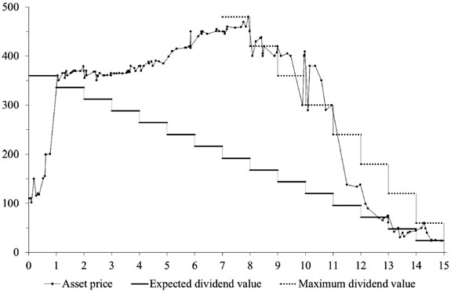
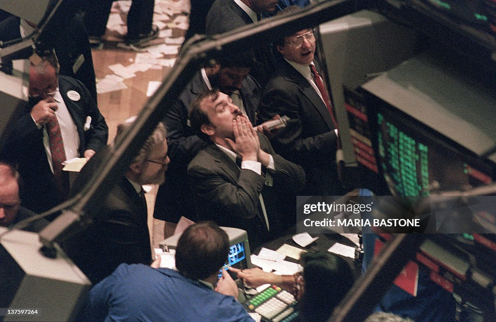
Limitations of this literature:
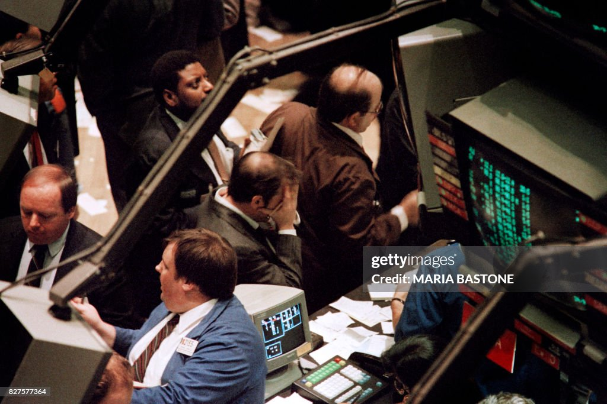
Limitations of this literature:
Limitations of this literature:
\(\rightarrow\) limited statistical power, weakened causal inference
Limitations of this literature:
\(\rightarrow\) limited statistical power, weakened causal inference
\(\rightarrow\) important to assess the credibility of reported findings
\(\rightarrow\) replications
High-powered preregistered replications of 17 key results
results taken from four prominent papers published in Am Econ Rev, J Finance, Rev Financ Stud, Rev Financ
Kocher et al. (2019): Unleashing animal spirits: Self-control and overpricing in experimental asset markets
Andrade et al. (2016): Bubbling with excitement: An experiment
Eckel et al. (2015): Thar she blows? Gender, competition, and bubbles in experimental asset markets
Corgnet et al. (2018): What makes a good trader? On the role of intuition and reflection on trader performance
High-powered preregistered replications of 17 key results
results taken from four prominent papers published in Am Econ Rev, J Finance, Rev Financ Stud, Rev Financ
Kocher et al. (2019): Unleashing animal spirits: Self-control and overpricing in experimental asset markets
Andrade et al. (2016): Bubbling with excitement: An experiment
Eckel et al. (2015): Thar she blows? Gender, competition, and bubbles in experimental asset markets
Corgnet et al. (2018): What makes a good trader? On the role of intuition and reflection on trader performance
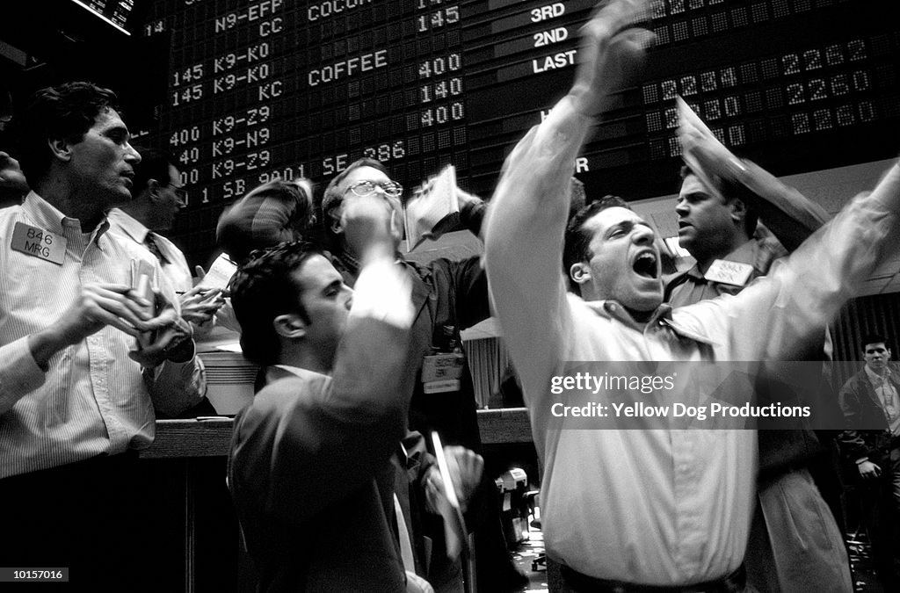
emotionsHigh-powered preregistered replications of 17 key results
results taken from four prominent papers published in Am Econ Rev, J Finance, Rev Financ Stud, Rev Financ
Kocher et al. (2019): Unleashing animal spirits: Self-control and overpricing in experimental asset markets
Andrade et al. (2016): Bubbling with excitement: An experiment
Eckel et al. (2015): Thar she blows? Gender, competition, and bubbles in experimental asset markets
Corgnet et al. (2018): What makes a good trader? On the role of intuition and reflection on trader performance
emotions
self-control
High-powered preregistered replications of 17 key results
results taken from four prominent papers published in Am Econ Rev, J Finance, Rev Financ Stud, Rev Financ
Kocher et al. (2019): Unleashing animal spirits: Self-control and overpricing in experimental asset markets
Andrade et al. (2016): Bubbling with excitement: An experiment
Eckel et al. (2015): Thar she blows? Gender, competition, and bubbles in experimental asset markets
Corgnet et al. (2018): What makes a good trader? On the role of intuition and reflection on trader performance
emotions
self-control
behavioral/cognitive factors
Laboratory asset market experiment with 4 conditions:
From Andrade et al. (2016):
induce emotions with 5min movie clip
Excitement treatment
Calm treatment
Laboratory asset market experiment with 4 conditions:
From Andrade et al. (2016):
induce emotions with 5min movie clip
Excitement treatment
Calm treatment
From Kocher et al. (2019):
exhaust self-control with Stroop task
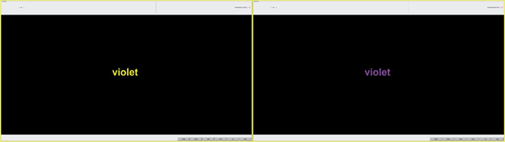
Low Self-Control (LowSC) treatment
High Self-Control (HighSC) treatment
Continuous double-auction markets resembling Smith et al. (1988, SSW):
long-lived asset with risky dividend payments
8 or 10 traders per market
Ten 2-minute periods
Dividends: 0 or 10 ECUs (50% prob.)
Endowments: (60; 1,000) or (20; 3,000)
Continuous double-auction markets resembling Smith et al. (1988, SSW):
long-lived asset with risky dividend payments
8 or 10 traders per market
Ten 2-minute periods
Dividends: 0 or 10 ECUs (50% prob.)
Endowments: (60; 1,000) or (20; 3,000)
New element: 2 repetitions of each market
Preregistered to collect 166 markets in 83 sessions:
31 markets per condition in replication of AOL
52 markets per condition in replication of KLS
\(\rightarrow\) 1.6x to 9x original sample size
\(\rightarrow\) at least 90% power to detect 2/3 of the original effect sizes at the 5% level
Preregistered to collect 166 markets in 83 sessions:
31 markets per condition in replication of AOL
52 markets per condition in replication of KLS
\(\rightarrow\) 1.6x to 9x original sample size
\(\rightarrow\) at least 90% power to detect 2/3 of the original effect sizes at the 5% level
83 sessions with 1,544 participants
Original study (Andrade et al., 2016)
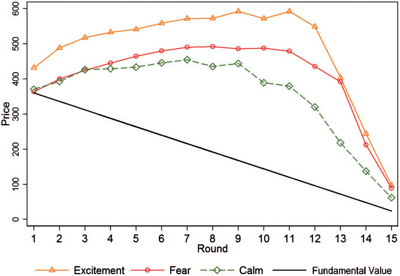
Direct Replication
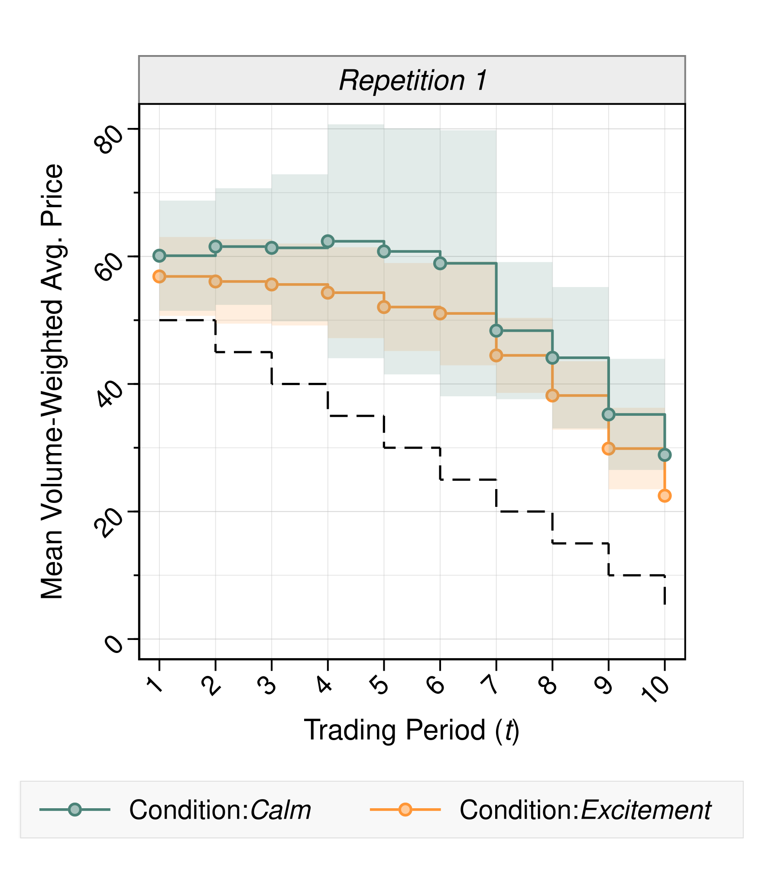
Original study (Andrade et al., 2016)
Direct Replication
overpricing (RD) is not higher in the Excitement condition than in the Calm condition
p = 0.369, n = 62
peak overpricing (RD_MAX) is not higher in the Excitement condition than in the Calm condition
p = 0.483, n = 62
Direct Replication
overpricing (RD) is not higher in the Excitement condition than in the Calm condition
p = 0.369, n = 62
peak overpricing (RD_MAX) is not higher in the Excitement condition than in the Calm condition
p = 0.483, n = 62
\(\rightarrow\) Replication fails
effect not significant
effect in opposite direction
Original study (Kocher et al., 2019)
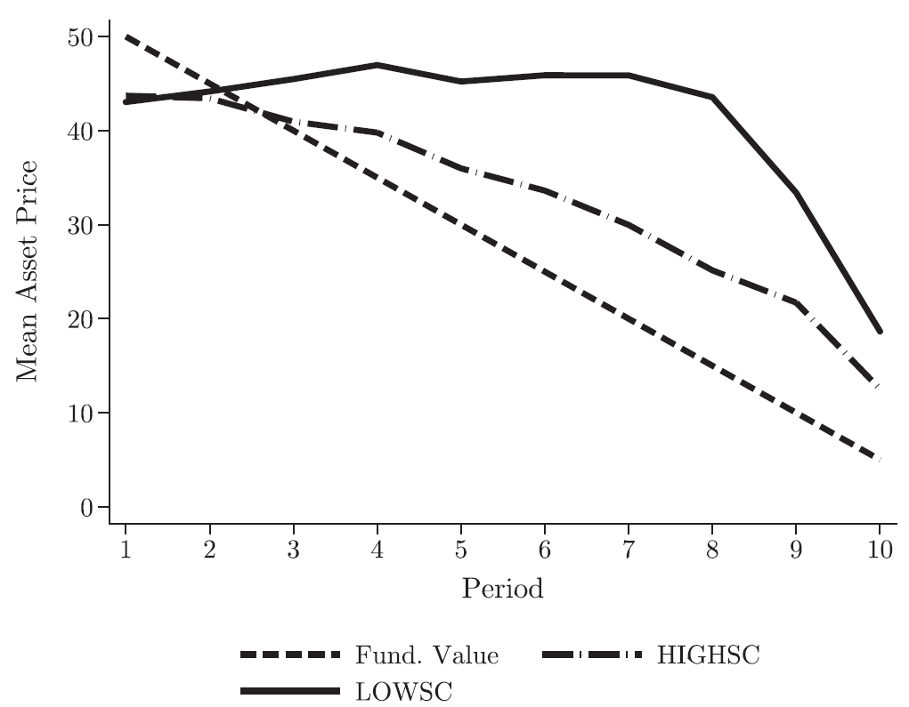
Direct Replication
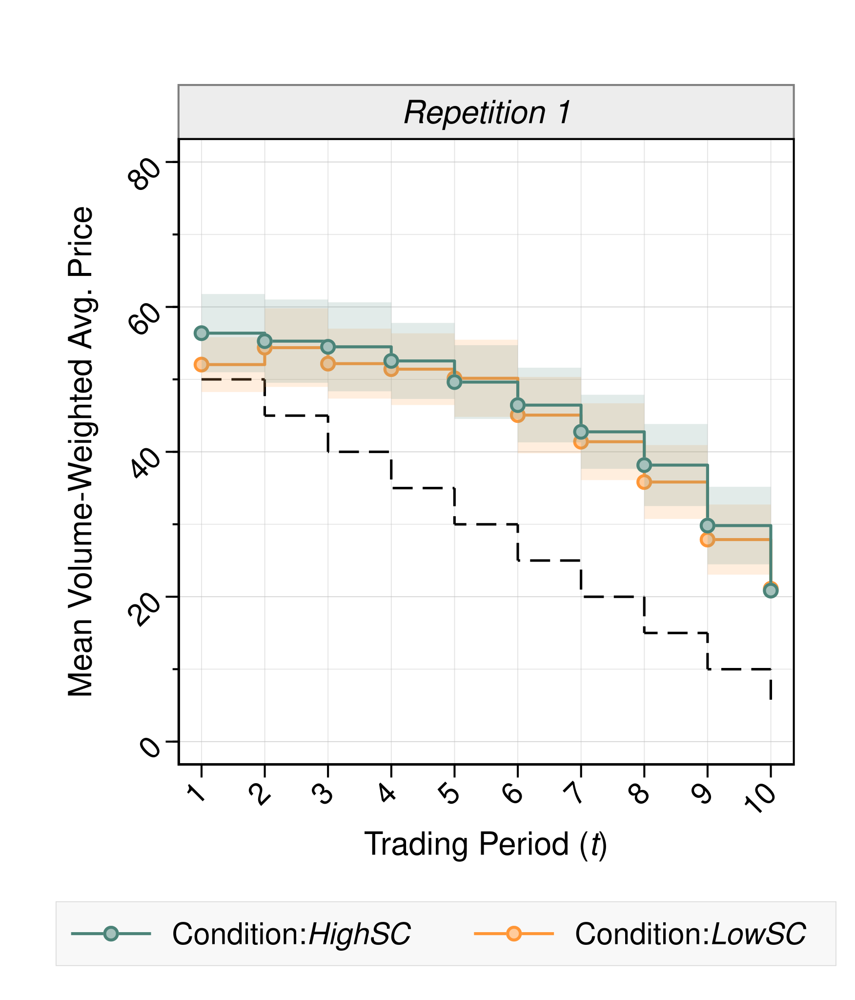
Original study (Kocher et al., 2019)
Direct Replication
overpricing (RD) is not higher in the LowSC than in the HighSC condition
p = 0.512, n = 104
mispricing (RAD) is not higher in the LowSC condition than in the HighSC condition
p = 0.452, n = 104
Direct Replication
overpricing (RD) is not higher in the LowSC than in the HighSC condition
p = 0.512, n = 104
mispricing (RAD) is not higher in the LowSC condition than in the HighSC condition
p = 0.452, n = 104
\(\rightarrow\) Replication fails
effect not significant
effect in opposite direction
Original study (Eckel/Füllbrunn, 2015)
Original study (Eckel/Füllbrunn, 2015)
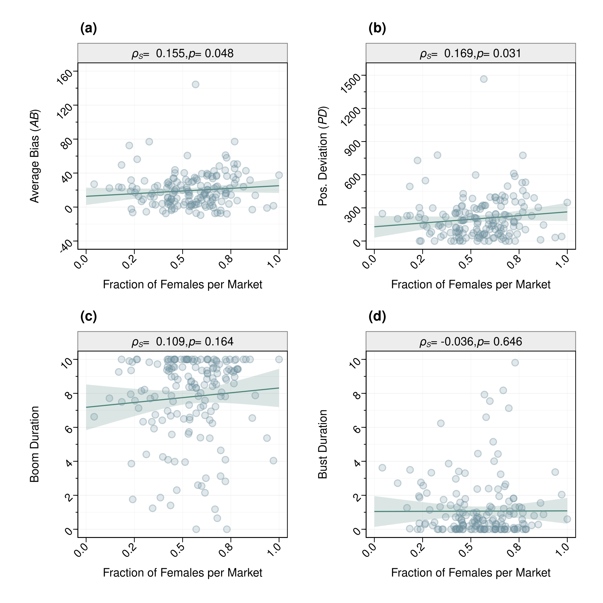
Original study (Eckel/Füllbrunn, 2015)
\(\rightarrow\) Replication fails
Original study (Corgnet et al., 2018)
Relationship trading success \(\longleftrightarrow\) cognitive reflection, fluid intelligence, theory of mind
𝝁 = 𝜶 + [CRT, APM, TOM] 𝜷 + 𝛀 𝝎 + 𝝐
𝝁 = 𝜶 + [CRT, APM, TOM] 𝜷 + [CRT 𝗑 TOM, APM 𝗑 TOM] 𝜸 + 𝛀 𝝎 + 𝝐
𝝁 = 𝜶 + [SI] 𝜷1 + [HET] 𝜷2 + [SI 𝗑 HET] 𝜼 + 𝛀 𝝎 + 𝝐
𝝁 = 𝜶 + [CRT, APM, TOM] 𝜷1 + [HET] 𝜷2 + [CRT 𝗑 HET, APM 𝗑 HET, TOM 𝗑 HET] 𝜻 + 𝛀 𝝎 + 𝝐
Conceptual Replication
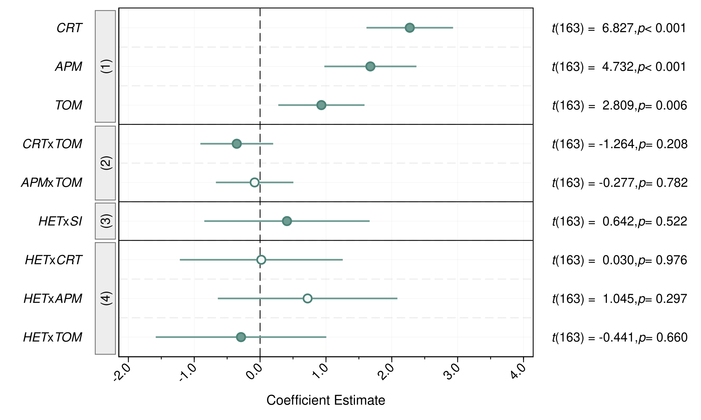
Main effects:
\(\rightarrow\) Replication successful
Interaction effects:
\(\rightarrow\) Partly successful
significant effects not replicated
non-significant effects replicated
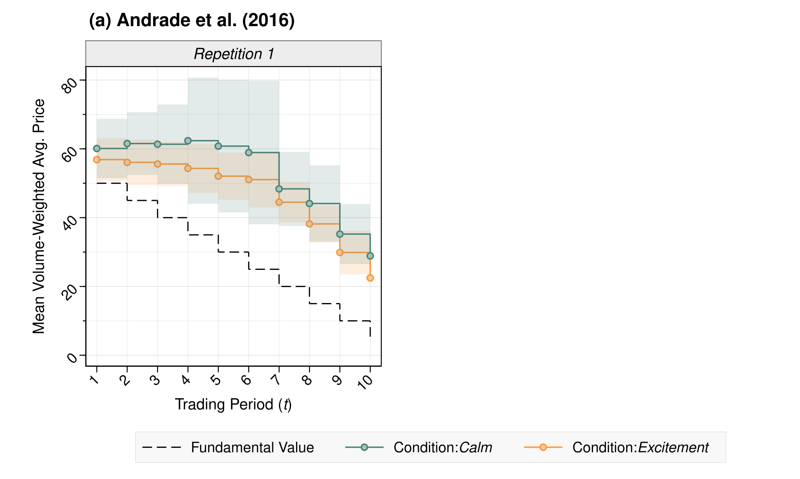
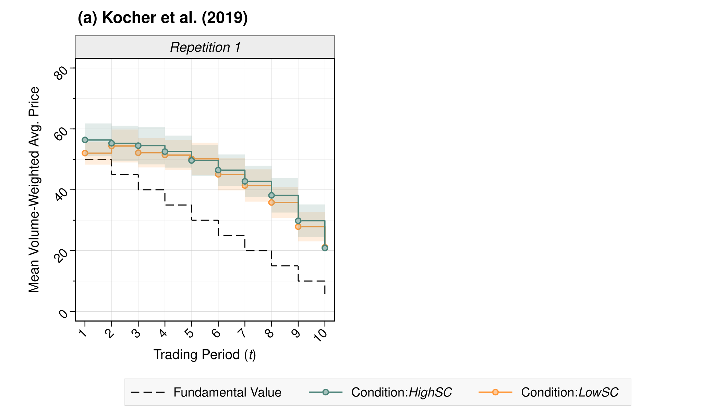
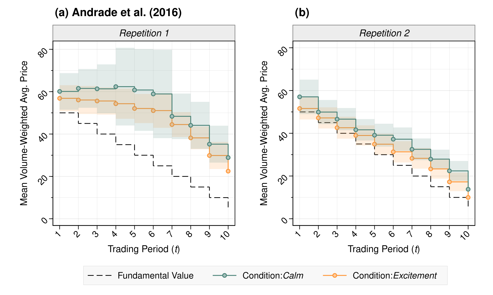
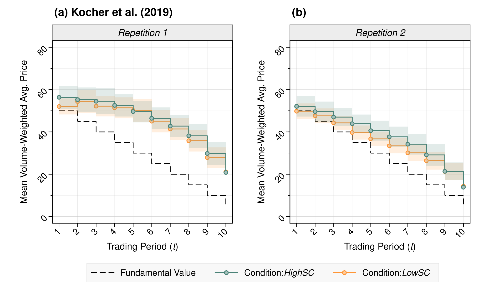
Two repetitions of each market
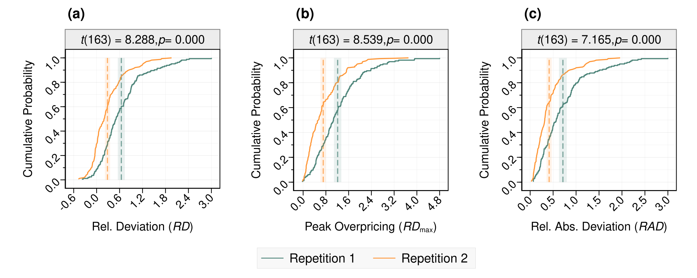
\(\rightarrow\) sig. lower Relative Deviation, Peak Overpricing, and Relative Abs. Deviation in 2nd repetition
\(\rightarrow\) stylized fact confirmed
Do Experimental Asset Markets Replicate?
Do Experimental Asset Markets Replicate?
Do Experimental Asset Markets Replicate?
Do Experimental Asset Markets Replicate?
High-powered, preregistered experiment with 1,544 participants to replicate 17 key results on experimental asset markets
emotions do not affect market efficiency
Do Experimental Asset Markets Replicate?
High-powered, preregistered experiment with 1,544 participants to replicate 17 key results on experimental asset markets
emotions do not affect market efficiency
self-control does not affect market efficiency
Do Experimental Asset Markets Replicate?
High-powered, preregistered experiment with 1,544 participants to replicate 17 key results on experimental asset markets
emotions do not affect market efficiency
self-control does not affect market efficiency
gender composition does not affect market efficiency
Do Experimental Asset Markets Replicate?
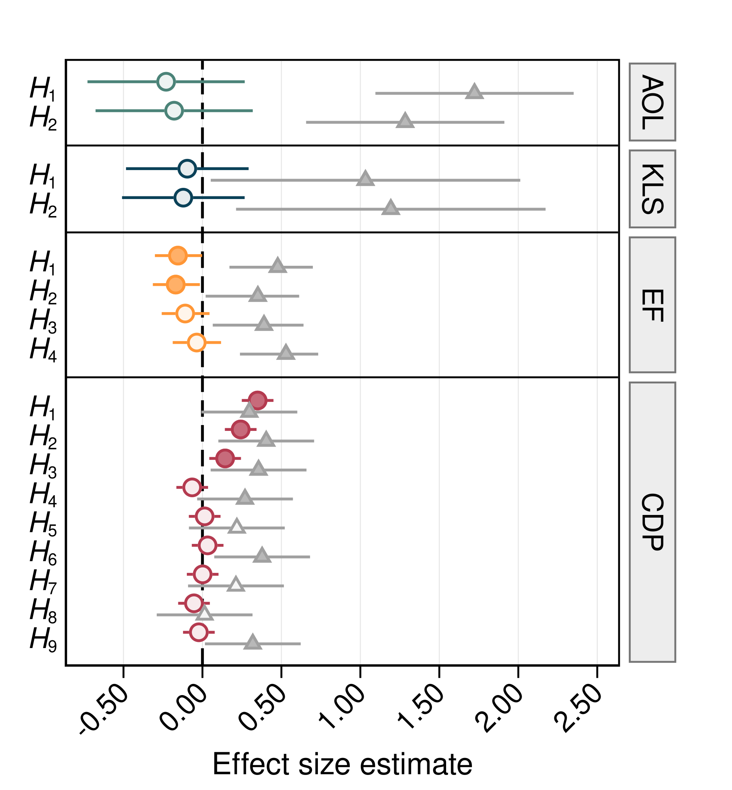
High-powered, preregistered experiment with 1,544 participants to replicate 17 key results on experimental asset markets
emotions do not affect market efficiency
self-control does not affect market efficiency
gender composition does not affect market efficiency
only 3 out of 14 original results reported as statistically significant successfully replicated
Do Experimental Asset Markets Replicate?
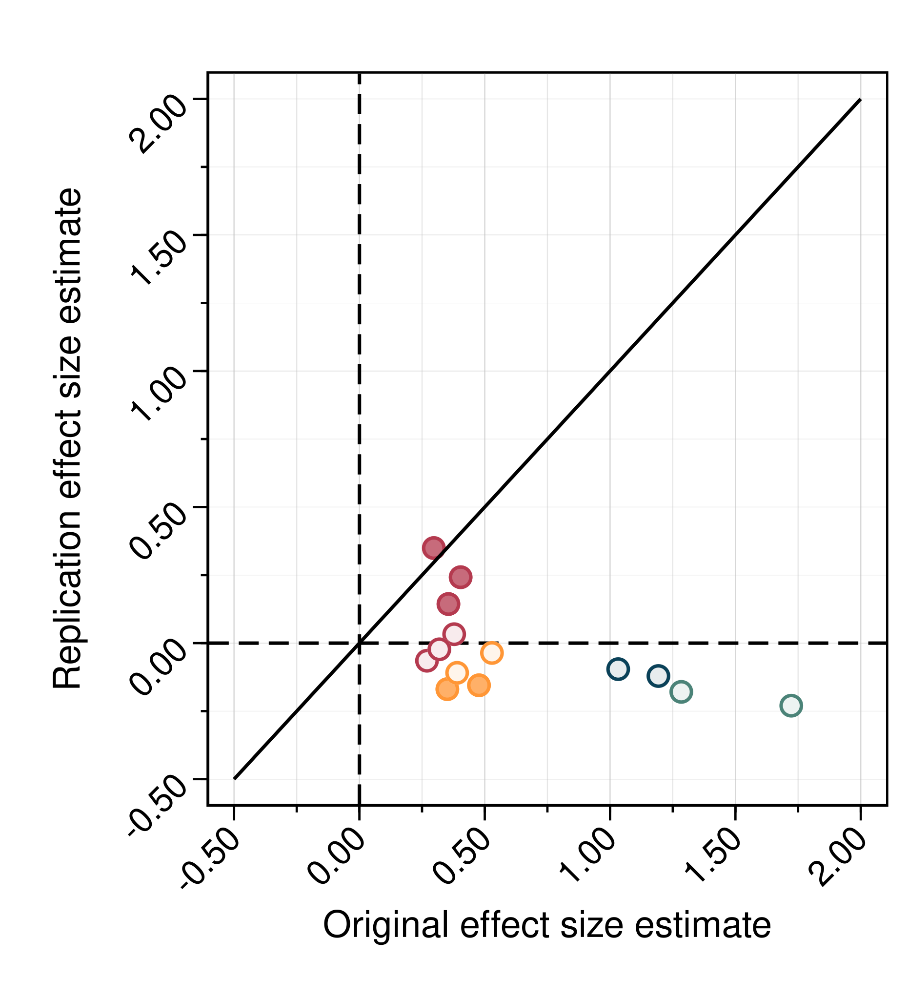
High-powered, preregistered experiment with 1,544 participants to replicate 17 key results on experimental asset markets
emotions do not affect market efficiency
self-control does not affect market efficiency
gender composition does not affect market efficiency
only 3 out of 14 original results reported as statistically significant successfully replicated
average replication effect size:
2.4% of the original estimates
Do Experimental Asset Markets Replicate?
High-powered, preregistered experiment with 1,544 participants to replicate 17 key results on experimental asset markets
emotions do not affect market efficiency
self-control does not affect market efficiency
gender composition does not affect market efficiency
only 3 out of 14 original results reported as statistically significant successfully replicated
average replication effect size:
2.4% of the original estimates
Thanks
christoph.huber@aalto.fi
chr-huber.com
Reproducibility Project: Psychology (RPP; Open Science Collaboration, 2015):
Experimental Economics Replication Project (EERP; Camerer et al., 2016):
Social Sciences Replication Project (SSRP; Camerer et al. 2018):
Management Science Replication Project (MSRP; Davis et al.. 2023):
Ex-ante manipulation check on Prolific
~200 participants randomized into two conditions: Excitement and Calm
67.4% describe their emotions as “excited/eager/enthusiastic” in Excitement
2.9% in Calm (p < 0.001)
4.2% describe their emotions as “calm/relaxed/peaceful” in Excitement
68.0% in Calm (p < 0.001)
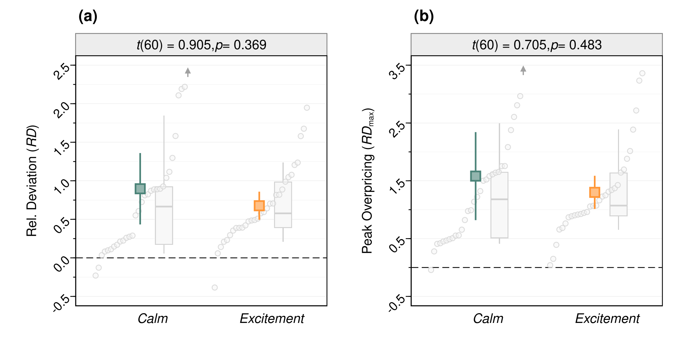
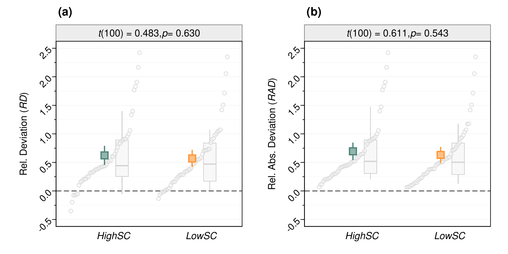
Christoph Huber